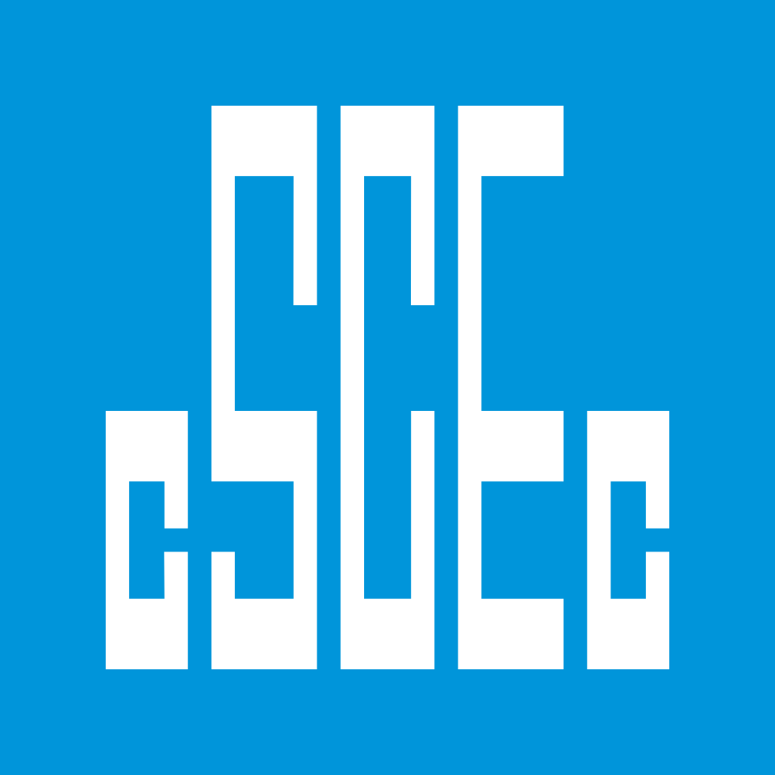

중국건축공정총공사 China State Construction Engineering Group Co. Ltd.
중국건축공정총공사(China State Construction Engineering Group Co. Ltd.)는 중국의 국영 건설 회사이다. 중국 및 해외 지역에서 주택건설, 인프라 건설 및 투자, 공공 프로젝트 기획 및 설계를 수행한다.
최종 업데이트

중국건축공정총공사는 어떤 브랜드인가
이 기업은 수익 기준으로 세계에서 가장 큰 건설 회사이며, 2020년 해외 판매 측면에서 8번째로 큰 종합 계약자이다. 주택건설, 인프라 건설 및 투자, 공공 프로젝트 기획 및 설계 등의 사업을 중국 및 해외에서 진행한다.
중국뿐만 아니라 해외에서 국제공항, 고속도로, 초고층빌딩, 수자원 댐 건설, 주택 등 대형 프로젝트들을 성공적으로 마쳤다. 나이지리아에서는 30년 이상 도로, 교량, 철도 등 인프라 건설 프로젝트를 진행하며 최대 건설 업체로 자리매김했다.
중국건축공정총공사는 어떻게 시작되고 성장했나
이 회사는 1957년에 국영기업으로 설립되었다. 설립 초기에는 자국과 아시아, 아프리카, 중동에서 중공업과 사회 간접 자본 건설에 참여했다.
1970년대 말에는 쿠웨이트에 최초의 국외 지사를 설립했으며, 1985년에는 미국 시장에도 진출했다.
중국건축공정총공사의 브랜드 아이덴티티는 무엇인가
이 기업은 중국의 국영 건설 회사로, 주택건설부터 대규모 인프라 건설 및 투자까지 폭넓은 사업 영역을 수행한다. 세계 최대 건설 기업 중 하나로서 중국과 해외 지역에서 다양한 공공 프로젝트를 기획하고 설계하는 특징을 보인다.
중국건축공정총공사의 대표 제품과 서비스는 무엇인가
중국건축공정총공사는 주택건설, 인프라 건설 및 투자, 공공 프로젝트 기획 및 설계 사업을 펼친다. 이 기업은 국제공항, 고속도로, 초고층빌딩, 수자원 댐 건설, 주택 등의 대형 프로젝트들을 성공적으로 마쳤다.
주요 사업 부문은 계획과 설계, 프로젝트 개발, 장비 리스, 무역, 건설과 시설 관리로 구성되어 있으며, 총 5개의 부문과 12개의 사업 영역으로 나누어져 있다.
중국건축공정총공사는 지금 어떤 상태인가
2015년 기준 총자산은 약 1조 749억 위안, 매출액은 약 8805억 위안을 기록했다. 현재 15만여 명의 직원을 두고 있으며, 베이징에 본사를 두고 있다.
2020년 8월 미국 국방부는 이 기업을 중국 인민해방군과 연관이 있는 기업으로 보고했으며, 같은 해 11월 미국 행정명령에 따라 관련 기업 주식 보유가 금지되었다.
중국건축공정총공사 로고는 어떻게 변해왔나
자주 묻는 질문
중국건축공정총공사는 어느 나라 브랜드인가요?
중국건축공정총공사는 중국의 기술·전자 브랜드입니다.
중국건축공정총공사는 언제 설립되었나요?
중국건축공정총공사는 1982년 설립되었습니다.
중국건축공정총공사의 브랜드 아이덴티티는 무엇인가요?
이 기업은 중국의 국영 건설 회사로, 주택건설부터 대규모 인프라 건설 및 투자까지 폭넓은 사업 영역을 수행한다.
중국건축공정총공사의 대표 제품은 무엇인가요?
중국건축공정총공사는 주택건설, 인프라 건설 및 투자, 공공 프로젝트 기획 및 설계 사업을 펼친다.
중국건축공정총공사는 현재 어떤 상태인가요?
2015년 기준 총자산은 약 1조 749억 위안, 매출액은 약 8805억 위안을 기록했다.
중국건축공정총공사의 본사는 어디에 있나요?
중국건축공정총공사의 본사는 베이징시에 있습니다(위키데이터 기준).
중국건축공정총공사의 공식 웹사이트는 어디인가요?
중국건축공정총공사의 공식 웹사이트는 http://www.cscec.com.cn/ 입니다.
출처와 검증
중국건축공정총공사 관련 참고: 공식 웹사이트 · 위키데이터 Q1073519 · 한국어 위키백과 · 영어 위키백과. 브랜드명은 한글과 원어를 함께 표기하되 데이터에 없는 표기는 만들지 않습니다. 기원 국가·설립연도는 검수된 정의문에서 확인된 값을 우선하고, 없을 때만 공식 웹사이트 URL이 일치하는 위키데이터 개체의 값을 씁니다. 위키데이터 값은 2026-09-12 기준입니다.